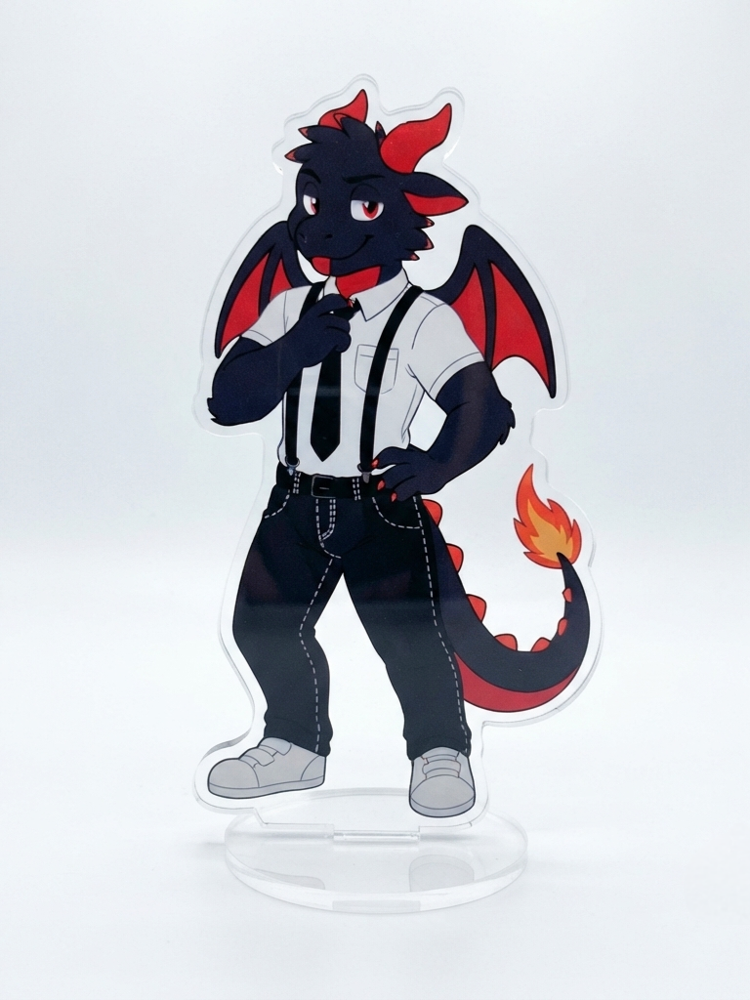
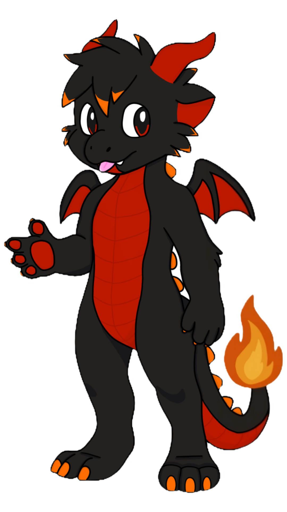
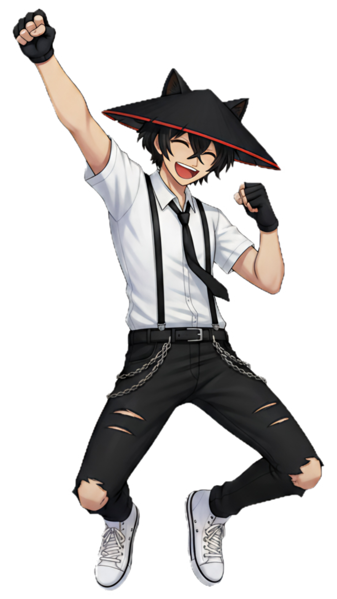
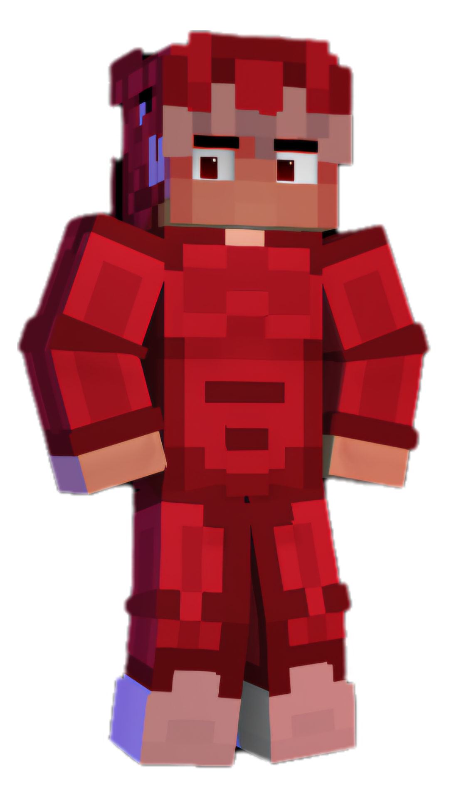

KURON OBJECT / 001

✦✦Акрилова фігурка Kuron
Акрилова фігурка заввишки 15 см із моєю фурсоною Kuron — маленький чорний дракончик, який додасть столу трохи характеру, крил і помаранчевого вогника.
Привіт, я Nikitoss2ss
Nikitoss2ss та Kuron — мій особистий простір
Заходь далі — тут багато чого цікавого про мене!
Мене звати Нікіта, мені 17 років (день народження — 5 січня), проживаю на західній Україні. Я високий, худий, веселий і трохи сором'язливий, але дуже люблю спілкування — особливо з тими, хто теж в темі фуррі чи ігор.
Мій нікнейм всюди — Nikitoss2ssСкопійовано. Люблю мультиплеєр і знайомства в іграх — шукаю нових фуррі друзів 😺
ТРИ ОБРАЗИ. ОДНА ІСТОРІЯ.

Чорний кемоно дракончик з червоним животом, крилами і вогником на хвості.
Наліпки Kuron ↗
Білий верх, чорні порвані джинси, капелюх самурая та вушками — мій основний образ.

У костюмі червоного дракона — для веселих серверних пригод.
Наліпки Nikitoss2ss ↗Люблю Machinarium за унікальний стиль малювання, атмосферу, сюжет і саундтреки.
Короткий опис: пригодницька point-and-click гра з фокусом на пазли, атмосферу та емоції.
В магазині ↗Завантажуємо статистику Steam...
NOW PLAYING / PERSONAL SELECTION
MERCH / IN PROGRESS
Особливі речі з Kuron вже тут.
Для замовлення зв'яжіться зі мною.

✦✦Акрилова фігурка заввишки 15 см із моєю фурсоною Kuron — маленький чорний дракончик, який додасть столу трохи характеру, крил і помаранчевого вогника.
Поки що тут живе лише передчуття.
Ця історія ще тільки починається.
THE INTERNET IS A SMALL PLACE
Зацікавився?
Приєднуйся!
Нікнейм всюди — Nikitoss2ssСкопійовано!